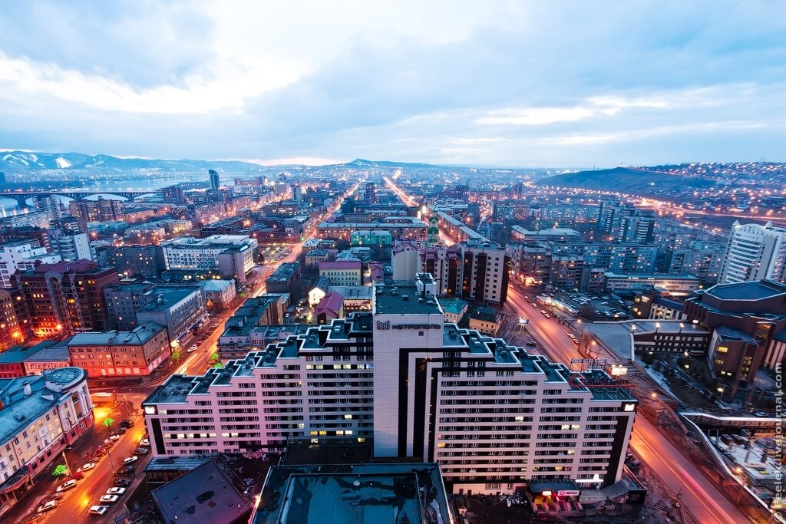
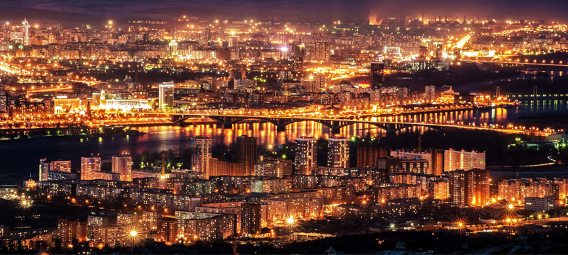
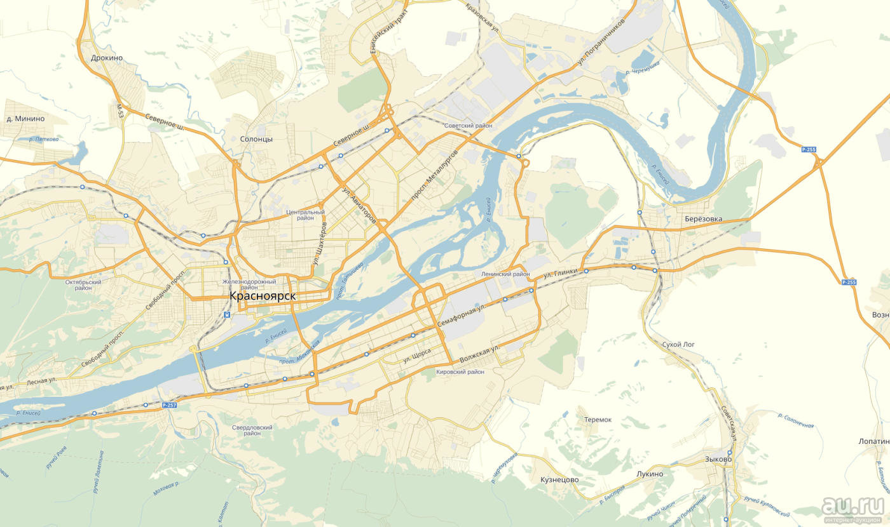

Красноярск

Красноя́рск — один из крупнейших городов России, крупнейший культурный, образовательный, экономический и промышленный центр Центральной и Восточной Сибири.

Административный центр Красноярского края (второго по площади субъекта Российской Федерации) и городского округа город Красноярск. Центр Восточно-Сибирского экономического района. Красноярск неофициально именуют столицей Сибири. Основанный в 1628 году, является крупнейшим из старинных городов Сибири. Во времена «золотой лихорадки» долгое время был крупным процветающим купеческим центром Сибири. Самый восточный город-миллионер в России.

Город расположен в центре России, на обоих берегах Енисея на стыке Западносибирской равнины, Среднесибирского плоскогорья и Саянских гор в ущелье, образованном самыми северными отрогами Восточного Саяна. Население города — 1 095 286 (2019) человек. В Красноярской агломерации проживает более полутора миллионов жителей. Крупный транспортно-логистический центр. Основные отрасли экономики — цветная металлургия, гидроэнергетика, космическая промышленность и другое машиностроение, химическая, деревообрабатывающая промышленность, образование.